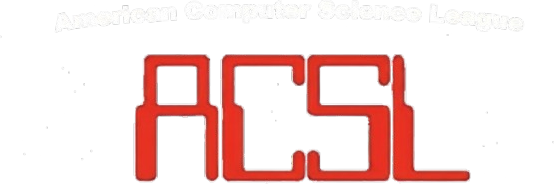

Una de las competencias de ciencias de la computación más antiguas y prestigiosas del mundo, en su 49.º año de operación ininterrumpida (1978–2027). Reúne a más de 7.000 estudiantes de 21 países en 6 continentes, es miembro de la Computer Science Teachers Association (CSTA) y cuenta con el apoyo de HackerRank y Google. En Brasil, la inscripción se realiza con el Clube Amplexo, organizador oficial.
Inscripciones hasta el 20 de diciembre de 2026 · ver cronograma
Temporada 2026–2027
49ª Edición Mundial

Plataforma oficial
Apoyo institucional
Las inscripciones 2026–2027 cierran en:
--Días
:
--Horas
:
--Min
:
--Seg
Fecha límite: 20/12/2026, 23:59 (hora de Brasilia)
4
Etapas de la temporada
5
Divisiones disponibles
+7.000
Estudiantes participantes
49
Años de historia (1978–2027)
✦ Reconocimiento Oficial ACSL
Amplexo Educação: Organizadora Oficial de la ACSL en Brasil
Según lo publicado oficialmente en el sitio web internacional de la ACSL (acsl.org/about), Amplexo Educação es la entidad responsable de organizar y coordinar las competencias de la ACSL en Brasil. Las pruebas se administran en inglés en la plataforma HackerRank y las puntuaciones se reportan en el ranking global para la clasificación a las Finales Internacionales.
"We are excited to announce that Amplexo Educacao just signed up to organize the ACSL competitions in Brazil. Students should register directly with Amplexo. The contests will be administered in English using the HackerRank system, and scores will be reported in the ACSL leaderboard. Top students will be invited to ACSL's end-of-year Finals."
— Comunicado oficial en acsl.org/about
De la inscripción a las finales globales, en tres pasos.
1
Inscripción con el Clube Amplexo
Hasta el 20 de diciembre de 2026, mediante el formulario oficial. Los estudiantes matriculados en el Clube Amplexo cuentan con descuento especial.
2
Cuatro etapas en línea
Pruebas en inglés en HackerRank, de octubre de 2026 a mayo de 2027, cada una con su propia ventana y fecha límite.
3
Finales globales
Los mejores puntajes de la temporada reciben una invitación a la final en línea del 29 de mayo de 2027.
👥 Formación de los equipos
Equipo 3-Score: el puntaje final del equipo es la suma de los 3 mejores puntajes individuales.
Límite del 3-Score: 6 participantes por equipo.
Equipo 5-Score: el puntaje final del equipo es la suma de los 5 mejores puntajes individuales.
Límite del 5-Score: 10 participantes por equipo.
🚀 Divisiones y estructura
Cada equipo debe inscribirse en una división según la edad y el nivel de experiencia.
La temporada tiene 4 competencias en línea que se realizan de forma individual.
Según la división, hay una prueba teórica y un problema de programación que se envía por HackerRank.
Las etapas siguen el calendario oficial convertido al horario de Brasilia (BRT).
⚠️ Atención: la competencia es completamente en inglés y no hay traducción oficial durante las pruebas.
✦ Plazos y temporada
Cronograma de la ACSL 2026-2027 (BRT)
La temporada regular de la ACSL opera por ventanas de prueba en HackerRank. Consulta los períodos y las fechas límite de envío.
20dic
Fecha límite de inscripción (Temporada 2026-2027): 20 de diciembre de 2026.La inscripción en Brasil se realiza directamente a través del Clube Amplexo Educação. Los estudiantes matriculados en el Clube Amplexo cuentan con descuento especial.
🏫División de Aula (Classroom)Sin programación Todos los grados · 50 min · 10 preguntas
Para quién: abierta a estudiantes de todos los grados. Ideal para estudiantes que cursan AP Computer Science Principles y otras clases de ciencias de la computación sin un componente principal de programación.
Formato: prueba en línea de 50 minutos con 10 preguntas teóricas (sin programación).
💻División JuniorCon programación Hasta 9.º grado · Python • C++ • Java
Para quién: ideal para estudiantes de escuela intermedia / secundaria básica que están aprendiendo programación o que tienen experiencia programando. Ningún estudiante más allá del 9.º grado puede competir en la División Junior.
Formato: prueba teórica de 30 minutos (6 preguntas) + 1 problema de programación para resolver en línea en un plazo de hasta 72 horas.
Para quién: ideal para estudiantes de educación media con poca o ninguna experiencia en programación y para estudiantes avanzados de escuela intermedia.
Formato: prueba teórica de 30 minutos (6 preguntas cortas: dos preguntas de cada uno de los 3 temas) + 1 problema de programación para resolver en línea en un plazo de hasta 72 horas en HackerRank. Los temas de los problemas cortos son los mismos de la División Senior. Los problemas de la División Senior son más desafiantes que los de la División Intermedia. Cada etapa tiene 6 problemas: dos problemas de cada uno de los 3 temas.
🥇División SeniorNivel avanzado Secundaria / AP · Python • C++ • Java
Para quién: ideal para estudiantes de educación media con experiencia en programación, especialmente aquellos que cursan AP Computer Science.
Formato: prueba teórica de 30 minutos (6 preguntas cortas: dos preguntas de cada uno de los 3 temas) + 1 problema algorítmico avanzado en línea en HackerRank (hasta 72 horas). Los temas de problemas cortos son los mismos que en la División Intermedia, pero los problemas son significativamente más desafiantes. Cada etapa tiene 6 problemas: dos problemas de cada uno de los 3 temas.
Programa común en EE. UU. y Canadá, con cursos de nivel universitario para estudiantes de educación media.
Nivel avanzado: clases más difíciles y profundas que las del currículo regular.
Examen final: al terminar el curso, el estudiante puede presentar un examen estandarizado.
Créditos universitarios: las calificaciones altas pueden permitir convalidar materias introductorias en la universidad.
📌 Resumen técnico de las divisiones con programación
Junior, Intermedia y Senior tienen prueba teórica + programación.
El problema de programación se resuelve en línea en HackerRank.
Plazo habitual para la programación: hasta 72 horas después de su publicación.
Cada competencia de las divisiones Intermedia/Senior tiene 6 problemas cortos (2 por tema).
✦ Integridad Académica
Reglas de conducta y honestidad
La ACSL exige una competencia individual justa en todas las etapas.
✓ Lo que está permitido
Papel, lápiz o bolígrafo.
En la programación: la documentación oficial del lenguaje y un IDE con funciones de autocompletado.
Después de la prueba: revisar en equipo, aprender de los errores y comparar soluciones. El trabajo colaborativo después de la prueba ayuda a construir soluciones más completas.
✕ Lo que no está permitido
Calculadoras.
Durante la prueba: buscar en internet, colaborar o recibir ayuda de otra persona. La resolución debe ser individual.
Consultar o copiar código de cualquier fuente, incluidos sitios web, libros o amigos/compañeros.
✍️ Declaración de honestidad de HackerRank
"No consultaré ni copiaré código de ninguna fuente, incluidos sitios web, libros o amigos/compañeros, para completar estas pruebas. Sin embargo, puedo consultar la documentación oficial del lenguaje de programación o usar un IDE con funciones de autocompletado."
⚠️ Consecuencias del plagio
HackerRank cuenta con algoritmos sofisticados para detectar plagio en el código enviado.
Primera infracciónPuntaje 0 (cero) en la pregunta señalada.
Segunda infracciónDescalificación inmediata de la participación en las finales.
✦ Finales globales
Finales de la ACSL
📅 Sábado, 29 de mayo de 2027💻 100% en línea en HackerRank
La fase final incluye transmisión en vivo, prueba de programación, prueba de problemas cortos y anuncio oficial de los ganadores.
🗓️ Cronograma del día
Horario de Brasilia. Atención: BRT = EDT + 1 hora.
Inicio de la transmisión en vivo para Senior, Intermedia y Junior.
Se habilita el acceso a la prueba de programación en HackerRank.
El estudiante debe iniciar la prueba de programación: 2 problemas, 20 puntos en total, duración de 3 horas a partir del inicio.
Reunión de orientadores (Zoom), hasta las 13:00.
Continuación de la transmisión en vivo para todas las divisiones (ingreso de Elemental y Aula).
Se habilita el acceso a la prueba de problemas cortos en HackerRank.
El estudiante debe iniciar la prueba de problemas cortos: 20 preguntas que abarcan todas las categorías del año, duración de 1 hora.
Salas de discusión (Zoom) moderadas por exparticipantes.
Anuncio en vivo de los resultados y los ganadores.
Enlace de la transmisión: se compartirá directamente con los alumnos clasificados y orientadores.
🎟️ Invitaciones e inscripción para las finales
Criterios de convocatoria: puntajes acumulados en las 4 etapas (ej.: 28 pts Jr/Int/Sr, 24 pts Aula, 14 pts Elemental).
Invitaciones: correos electrónicos enviados del 1.º al 28 de mayo de 2027.
Tarifa de participación en la final: US$ 35 por estudiante invitado (tarifa oficial de la ACSL).
El correo de invitación incluye el enlace de pago y el acceso a la prueba en línea en HackerRank.
📜 Formato y reglas generales
Premiación de las finales: solo individual (no hay premio por equipo).
Competencia individual y honesta: cualquier colaboración indebida genera descalificación inmediata.
🏆 Quiénes reciben premios
Temporada regular (4 etapas): los estudiantes y equipos con los puntajes más altos por división, estado de EE. UU. y país reciben un certificado.
Finales: los mejores puntajes por división reciben premio y certificado internacional.
Entrega: certificados digitales emitidos oficialmente; premios físicos enviados a la dirección del estudiante ganador.
Inscripciones abiertas
¿Quieres participar en la ACSL con el Clube Amplexo?
Inscripciones hasta el 20 de diciembre de 2026. Nuestro equipo te guía en la inscripción, la preparación y el acompañamiento durante toda la temporada.